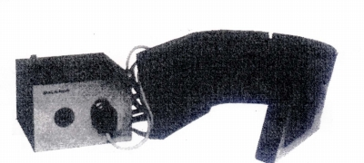
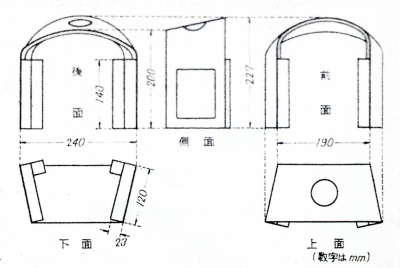
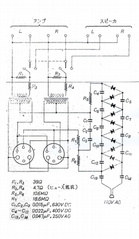
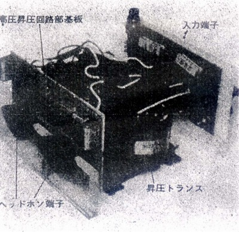

1973年当時のコンデンサー型




■価格
■型式 エレクトレットスタティック型
■振動板 9.5�p×8.5�p 電極/真鍮製パンチングメタル
■インピーダンス
■再生周波数帯域
■許容入力
■感度 106dB/入力10W
■コード
■重量 630g
■発売
■販売終了
■備考
アダプター変圧比 1：82（インピーダンス比 1：6700） W135×H90×D155
1,900g
バイアス電圧が現在のスタックスの製品より高い1,500Vだった。
1973年のオーディオフェアに登場。扱いは丸紅。実際販売されたかは不明。
参考価格としてあげられていたのはドイツでの小売価格で684マルク（74年当時で72,000円前後）